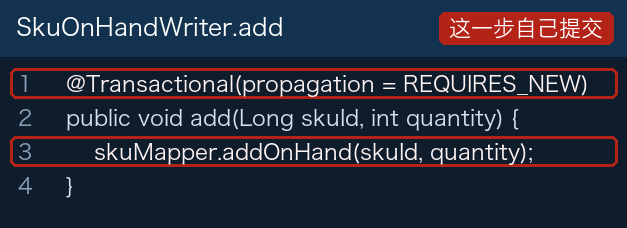
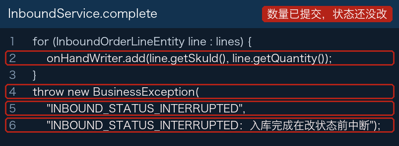
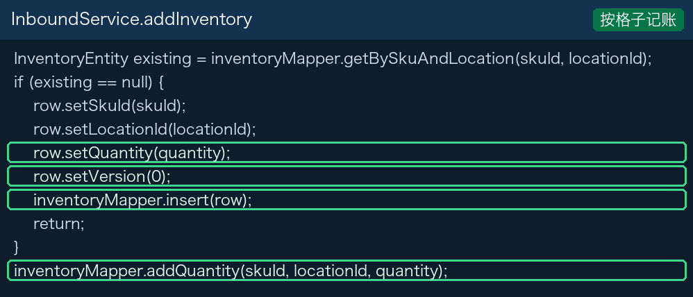
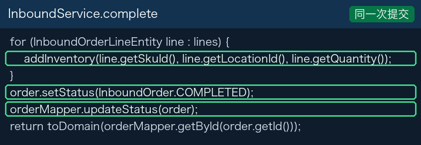

要回答的两句话
上学期的格子还在：A-01-01、A-01-02。第二部分的货还在：SKU-001 轴承。
入库是把多少货放进哪个格子。做完之后要能回答：A-01-01 上的轴承有多少，A-01-02 上的轴承有多少。单据要从草稿变成已完成。
DRAFT
货品 + 库位 + 数量
数量记下来，状态变成 COMPLETED
一次完成，数据经过哪里
一行请求是货品编码、库位编码、数量。Controller 把这三个值交给 Service，不写 SQL。行写进 inbound_order_line，库位主键留在这一行上。
第三部分完成时，每一行的数量加到货品的 on_hand。这一步单独提交。随后在把状态改成 COMPLETED 之前中断。



两张入库单做完之后
第一张：SKU-001 进 A-01-01，数量 10。第二张：同一货品进 A-01-02，数量 8。两次完成都返回下面这种结果。


A-01-01 上现在有多少轴承。表上只有 18 这一个数。两张单都还写着草稿。改掉之后
数量改记到 inventory。同一种货、同一个库位只有一行，列是 quantity 和 version。version 每次改数量加一，更新条件里先不用它。加数量和把状态写成 COMPLETED 在同一次提交里。



同一张货 SKU-001，10 进 A-01-01，8 进 A-01-02。两次完成都返回已完成。


重温：把这个分支合并进第三部分
第一部分做过一次：自己的仓库里新建分支、推上去、在网页上创建 Pull Request、在网页上点合并。这次用课堂仓库重温，分支已经定好。
仓库地址仍是 https://gitee.com/dingsaier/warehouse-backend.git。源分支是 第三部分改良版，上面是这份讲义和入库代码。目标分支是 第三部分。教师先按下面做完，学生看。全班只合并这一次，不要每人再推一个同名分支。
1. 切到改良版
GitHub Desktop 里点 Fetch origin，再点 Current Branch，选「第三部分改良版」。列表里没有，就说明网上还没有这条分支。
这一步的意思：接下来要送出去的是改良版，不是第三部分本身。
2. 推上去
上方如果是 Publish branch 或 Push origin，点它。账号和第一部分一样：用户名是 Gitee 个性地址，密码框粘贴私人令牌。没有写入权限时，这一步会被拒绝，接着看教师的屏幕即可。
这一步的意思：Pull Request 只能合并网上已经有的分支。Push 是把改良版送到 Gitee。
3. 在网页上创建 Pull Request
浏览器打开该仓库，点「Pull Requests」，再点「新建 Pull Request」。源分支选 第三部分改良版，目标分支选 第三部分。标题写「合入第三部分改良版」。点「创建」。
这一步的意思：这是一张合并申请，请把改良版上多出来的提交并进第三部分。创建之后，第三部分还没有变。页面上能看到将要并进去的文件。
4. 在网页上合并
就在这个 Pull Request 页面点「合并」，再确认。不要回 GitHub Desktop 点 Merge。
这一步的意思：网页把改良版的提交接进第三部分。点完以后，第三部分里才有这次的改动。
5. 把合并结果拿回来
GitHub Desktop 里 Current Branch 换成「第三部分」。上方变成 Pull origin 时点它。
这一步的意思：合并发生在网上。Pull 把第三部分的新提交拿进你正在看的这份本地仓库。不点的话，你电脑上的第三部分还是合并前的样子。
作业里要写同类接口时
把下面这段发给 DeepSeek 或 Kimi。生成后按上一节的顺序检查：库位有没有进到某一行，数量有没有和单据状态分两次提交。
这是 Spring Boot 项目，包名 com.eurasia.pro_skill。 请按 UserController 的方式写入库：Controller 把字段传给 Service，不要用 builder。 入库单 inbound_order：单号、状态 DRAFT/COMPLETED、创建时间。 入库行 inbound_order_line：货品、库位、数量。 完成时把数量记到「货品 + 库位」各自的一行，并在同一个事务里把状态改成 COMPLETED。 库存表 inventory：sku_id、location_id、quantity、version，唯一键是货品加库位。 生成后说明：一次完成请求里，数量和状态分别在哪一层写下去。